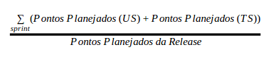
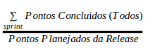
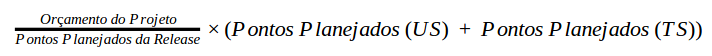
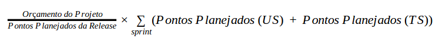
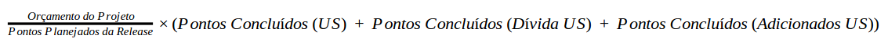
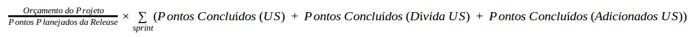
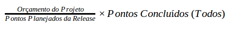
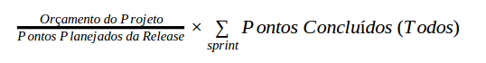

1. Acompanhamento da EVM (Earned Value Management)
A EVM pode ser encontrada com seu desenvolvimento em tempo real aqui
1.1.Definições iniciais
Conforme o Termo de Abertura, o projeto todo teve um orçamento de recursos humanos de R$ 36.563,40 e ao fim da Release 1 em seu Relatório de Custos foi gasto com recursos humanos o valor de R$ 13.466,55 sobrando assim como orçamento de recursos humanos para a Release 2 o montante de R$ 22.178,85. Contudo, por interesse da cliente, foram adicionadas novas histórias e o tempo foi aumentado para a produção deste. A cliente então irá fornecer bolsa para 7 (sete) dos membros com a continuação do projeto até o mês de dezembro, tendo como folga não remunerada o mês de julho. Logo, cada membro com bolsa terá um custo de R$400.00 por mês contados entre agosto e dezembro, contabilizando R$2.000,00 por membro. Elevando o orçamento de recursos humanos para R$36.178,85.
Todo o custo da Release foi feito sobre a definição de esforço. Esta definição foi feita internamente sob o aspecto de esforço necessário para o desenvolvimento das funcionalidades. Essa medida de esforço é apenas uma estimativa baseada no empirismo do time. O esforço mais básico é cotado como "1 ponto" e a partir dele é efetuado a estima de esforço para cada funcionalidade que deve ser implementada. A estimativa foi feita utilizando a técnica do Planning Poker e o esforço necessário para cada história planejada pode ser encontrado em nosso Backlog do Produto.
Foi feito para definição do custo, o valor do ponto que é baseado sob a razão do orçamento da release pelo somatório do total de pontos.
Caso o time efetue a repontuação das histórias, o somatório dos pontos será alterado e consequentemente o valor do ponto.
2. Tipos de Pontos em uma Sprint
- Pontos Planejados (US): São todos os pontos de User Stories que foram planejadas serem feitas na Sprint;
- Pontos Planejados (TS): São todos os pontos de Techinical Stories que foram planejadas serem feitas na Sprint;
- Pontos Adicionados (Dívida US): São todos os pontos de User Stories que são pendencias de Sprints anteriores;
- Pontos Adicionados (Dívida TS): São todos os pontos de Techinical Stories que são pendencias de Sprints anteriores;
- Pontos Adicionados (US): São apenas User Stories que são adicionadas durante a Sprint e não foram planejadas.
3. Cálculos:
- Porcentagem Planejada Concluído do Projeto:

- Porcentagem Real Concluído do Projeto:

- Custo Planejado da Sprint:

- Custo Planejado do Projeto:

- Valor Agregado da Sprint:

- Valor Agregado do Projeto:

- Custo Real da Sprint:

- Custo Real do Projeto:

4. Justificativa dos Cálculos
4.1. Valor Planejado
Para a equipe ficou definido que o valor planejado deve quantificar todos os pontos planejados (que não são dívidas) que foram adicionados na Sprint na reunião de planejamento. Sendo assim os pontos que são utilizados para este cálculo são: Pontos Planejados (US) e Pontos Planejados (TS). As TS entram no planejado, pois é um esforço que o time terá que fazer para a conclusão da Sprint e este esforço na reunião de planejamento já é considerado.
4.2. Valor Agregado
O valor agregado é considerado apenas pontos que em sua entrega criem um impacto funcional no cliente e que não seja fruto de historias geradas devido a falhas de desenvolvimento (TS). Sendo assim os pontos que são utilizados para este cálculo são: Pontos Planejados (US), Pontos Adicionados (Dívida US) e Pontos Adicionados (US).
4.3. Valor Real
Para o calculo do valor real foram utilizados todos os pontos concluídos do projeto. Tomamos esta definição do calculo, pois assumimos que o valor real é dado sobre o esforço do time. Como todos os pontos concluídos refletem no esforço que o time teve até o momento, foi definido ele para o cálculo do valor real.